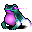
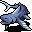

獣の棲み処 The Lair
英語版 CrawlWiki の記事「The Lair」(0.34 向け、2026-02-28 版)の翻訳です。原文の著者は編集履歴をご覧ください。
| 多くの冒険者にとって、獣の棲み処はわくわくするような環境の変化だ。実際、切り刻まれたり、焼かれたり、刺されたりするのではなく、角で突かれ、引き裂かれ、食われるというのも、一興ではある。
獣の棲み処には、沼か浅瀬のどちらか一方、蛇穴か蜘蛛の穴ぐらのどちらか一方、そしてスライムの穴ぐらへの入口がある。 この分岐の入口は迷宮の第8～11階層のどこかにある。 この分岐は5階層ある。 |
 獣の棲み処(英語では the Lair と略して呼ばれることが多い)は、自然の獣で満ちた分岐だ。獣の棲み処そのものにゾットのルーンはないが、ルーンのある 3 つのテーマ別の分岐への入口がここにある。毒がテーマの分岐が 1 つ(蛇穴か蜘蛛の穴ぐら)、水がテーマの分岐が 1 つ(沼か浅瀬)、そして酸がテーマのスライムの穴ぐらだ。
獣の棲み処(英語では the Lair と略して呼ばれることが多い)は、自然の獣で満ちた分岐だ。獣の棲み処そのものにゾットのルーンはないが、ルーンのある 3 つのテーマ別の分岐への入口がここにある。毒がテーマの分岐が 1 つ(蛇穴か蜘蛛の穴ぐら)、水がテーマの分岐が 1 つ(沼か浅瀬)、そして酸がテーマのスライムの穴ぐらだ。
獣の棲み処への階段は D:8-11 にあり、まわりには迷宮草やお化けキノコ、ときにはオクロブ草が生えていることが多い。入口のあたりに、ヤクやバジリスク、コモドドラゴンといった獣の棲み処の住人が何体かうろついていることもある。
目次
構造
獣の棲み処は 5 階層ある。階の造りはさまざまで、身を隠すものがほとんどない広々とした大部屋もあれば、小部屋が狭い通路でいくつもつながったものや、小さな林や池が点在する開けた場所もある。地形はかなり不規則だ。狭い通路はあるものの、本当に幅 1 マスのトンネルは少ないことが多く、群れで動く獣たちが通りがかった者を取り囲めるようになっている。どの階でも、浅い水や深い水の水たまり、ときには溶岩があちこちにあることが多い。
獣の棲み処で祭壇が見つかることはごく少ないが、ジーヴァを信仰したいなら、第4階層か第5階層のスライムの穴ぐらの入口のすぐ外に、たいてい(66%)祭壇がある。
獣の棲み処第5階層
獣の棲み処の最下層はたいていかなり開けているが、最下層用のヴォールトが必ず 1 つか 2 つあり、強めのモンスターがいろいろと、それに財宝がいくつか置かれている。人目につかない洞窟群のこともあれば、寺院のある森や、スプリガンの集団がいくつもいる森のこともある。どれが出たら何に備えればよいかは、下の#第5階層のヴォールトの節を参照。
ほかの分岐の最下層と同じく、第5階層はそれまでの階より危険なことが多いので、慎重に探索しよう。
戦略
少なくとも、経験値とアイテム、そして 3 つのルーンの分岐への道のためだけでも、この分岐は回る価値がある。獣の棲み処は、迷宮の深いところ(D:13 以降)やオークの坑道より攻略しやすいことが多い。そちらのほうが、階層に不相応な強さの厄介なモンスターが出やすいからだ。迷宮にはアビスへの追放の危険があるうえ、ほかにも怖い OOD(最悪の場合はストームドラゴンまで)が出る。オークの坑道には荒っぽいエティンや岩の巨人が出ることがあり、オークの魔道士による麻痺の危険もある。
獣の棲み処は動物だらけだ。敵のかなりの部分(オオヒキガエル、ブラックマンバ、スカイシャーク)は素早く、命取りにもなりうる。ヒドラは首の数しだいで、とんでもなく強い近接攻撃の脅威になる。ワタリガラスはあっという間に破滅を負わせてくるし、象は階段からこちらを押し出してくる。リンドヴルムと霜ドレイクは属性つきの遠距離攻撃を放ち、人食いヤクは意志力の高い、群れで来るしぶとい敵だ。
素早い毒持ちの生き物がよく出るので毒耐性があると役に立つが、必須からはほど遠い。ほかの耐性もたいていは必要ない。とはいえ、付け替えられる耐性(リンドヴルムには rF+、霜ドレイクには rC+、オクロブ草には rCorr……)があって困ることはない。
獣の棲み処の下にある分岐は、獣の棲み処そのものよりずっと難しい。最低でも、どの分岐に入るにしても先に獣の棲み処の第1～5階層を片付けておきたい。さらに迷宮とオークの坑道も片付けてから分岐に挑むプレイヤーが多い。また、スライムの穴ぐらはほかの分岐よりはるかに難しいので、ゲームのずっと後のほうまで取っておかれることが多い。
モンスター
よく出るモンスター
| Y |
Y |
Y |
Y |
Y |
| h |
h |
h |
F  またたきガエル |
F |
| S |
S |
k |
D |
l |
| k |
l |
S |
k |
b |
| F  スカイシャーク |
D |
w |
B |
t |


まれに出るモンスター
| t |
H |
s |
l |
S |
獣の棲み処の下の分岐に棲むモンスターが、その入口にいることもある。浅瀬なら水棲の民、蜘蛛の穴ぐらなら背赤蜘蛛、といった具合だ。
また、モンスター入りの決まったヴォールトもたくさんある(例: 殺人蜂と女王蜂でいっぱいの巣)。
ユニーク
| 6 |
x |
e |
w |
| j |
@ |
@ |
@ |
| @ |
@ |
o |
c |
| F |
@ |
T |
K |
| o |
第5階層のヴォールト
獣の棲み処の最後の階は、それまでの階より難しい。次のヴォールトのうち少なくとも 1 つが必ずある。大きなヴォールトが 1 つか、小さなヴォールトが 2 つだ。
大きな最下層ヴォールト
- minmay_lair_end_enchanted_forest: さまざまな野獣に加えて、スプリガンが何体か、スプリガンの騎手が数体、ボガートが少しいる森。
- due_jungle_book: ジャングルの真ん中にある寺院。幽体のアナコンダが、死人使いと凶暴化した象の仲間を連れている。
- evil_forest: 魔術師が守る寺院のある森。この魔術師は、麻痺やレフディブの水晶槍、アビスへの追放といったとても危険な呪文を持っていることがある。魔術師の先には、何体もの悪魔に守られた地獄の入り口への門のある部屋がある。この時点で門をくぐるのは手っ取り早い死に方だ。せめて深層に挑める準備ができるまでは待とう。
- minmay_lair_end_frog_pond: たくさんのカエル、吸血蚊、何匹かの電気ウナギ、数匹の巨大ヒルがいる大きな池。
- evilmike_catoblepas_cave: ヤク、人食いヤク、カトブレパスでいっぱいの洞窟群。入口のまわりに石になった植物や彫像があるのが目印だ。
- grunt_lair_end_beastmaster: 洞窟トロルの祈祷師が獣を手なずけている。カトブレパスが 1 体、人食いヤクの群れ、それにヒドラ、リンドヴルム、凶暴化した象のどれか 1 体だ。
- gammafunk_lair_ancient_temple: 水没した、吹きさらしの石造りの建物。水棲のモンスターがいろいろと、神話の獣が何体か、それに水棲の民の生き神がいる。
- cheibrodos_lair_end_hotspot: 炎のモンスターでいっぱいの小さな火山。中央の部屋にはファイアドラゴンとその財宝がある。
小さな最下層ヴォールト
- wormcave: 巨大ヒル、無気力の蝸牛、巨大赤色蜂、リンドヴルムでいっぱいの洞窟。金貨の山が積まれた部屋をファイアドラゴンかアイスドラゴンが 1 体守っているが、この戦いは避けてもよい(相手をする準備ができていないならルーンで封印された扉を開けないこと)。
- hangedman_lair_caniforms_friends: 犬系と熊系のモンスターの詰め合わせ。ヘルハウンドの火炎のダメージ、雷獣の電撃のダメージ、怒った北極熊の重い物理ダメージを覚悟しよう。
- guppyfry_lair_end_dragon: 小さな湖に囲まれた木立。トカゲと格下のドラゴンでいっぱいで、中央には本物のドラゴンが 1 体いる。
- hangedman_lair_in_review (S): 崩れた部屋の連なり。獣の棲み処のモンスターのおさらいのようなヴォールトで、獣の棲み処に出るさまざまなモンスターに加えて、マンティコアのような危険な生き物も少し出てくる。
- hangedman_lair_tendril_chambers: 円形の区域がくさび形のいくつかの区画に分かれていて、素早く、毒を持つことの多いモンスター(ワイバーン、ブラックマンバ、オオヒキガエルなど)でいっぱいだ。くさびのうち 1 つか 2 つは中央の部屋に通じていて、その先の石造りの部屋に財宝と、大喰い蜘蛛、背赤蜘蛛、守護の大蛇のような、より危険なモンスターの一団がいる。
変更履歴
- 0.34 で山甲羅が追加され、ワタリガラスが新しい仕組みで復活した。
- 0.30 でスカイシャークが追加された。
- 0.29 より前は、獣の棲み処は 6 階層あった。スライムの穴ぐらの入口は第5～6階層に、ほかの分岐の入口は第2～4階層に出た。スライムの穴ぐらの入口近くにジーヴァの祭壇がある確率は、66% ではなく約 50% だった(どのヴォールトが選ばれるかによる)。
- 0.19 より前は、獣の棲み処は 8 階層あった。
- 0.18 で炎のドレイクが霜ドレイクに置き換えられ、トタテグモと脳髄ワームが削除された。
- ワタリガラス、巨大ダニ、穴掘りの甲虫、ゴライアスの甲虫は 0.17 で削除された。
- 0.15 で無気力の蝸牛が追加された。
- 0.14 より前は、獣の棲み処の入口は D:8-13 にあった。
- 0.12 で、8 階にあたる最下層の、ドラゴンがテーマのヴォールトと洞窟トロルの祈祷師のヴォールトが追加された。
- 0.9 より前は、魔法の地図の巻物を読むと 獣の棲み処第8階層の寺院の隠し部屋が見えた。
| 分岐の一覧 |
|---|
| |
| 関連項目: ポータル |